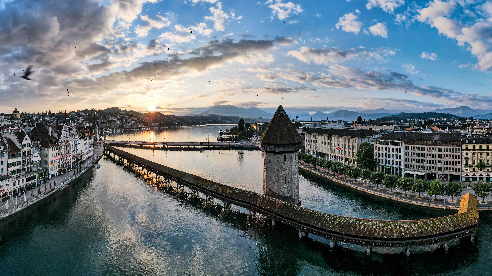

Hüseyin Ovayolu
About me
I am a Luzern-based, novice, JavaScript developer with some additional skills. Now, I am writing my Master`s thesis on intercultural communication and agile leadership. I enjoy brainstorming through agile methodologies. In addition, I am a music enthusiast, experienced in Turkish music with Saz and Guitar.
Career
It has began in Gaziantep
I was born in Gaziantep, Turkey. Due to the cultural richness of the city, I had chance to meet and learn how to deal with other cultures from the very beginning of my life.
Izmir "Smyrna" Episode
After the gymnasium education, between 2008 and 2010, I studied for 2 years in Nursing at Dokuz Eylül University in Izmir, Turkey. In addition to medical knowledge, I gained lots of communication skills here. It was a nice experience living in the city of ancient gods, and good wine.


Istanbul Journey
After two precious years, I wanted to follow my dreams, and studied Capital Markets in Marmara University in Istanbul, Turkey. Upon completing Bachelor degree in 2015, studied MSc in Financial Markets and Investment Management at the same university. Meanwhile, I worked as a Financial Analyst in Ikon Securities, AG. Than I worked as an Investment Specialist in Garanti BBVA Securities AG. Due to some private issues, I couldn`t complete graduate study and moved to Switzerland in 2017. In the meanwhile, I started to work as a Financial Analyst in Ikon Securities. Than I worked as a Investment Specialist / Stockbroker in Garanti BBVA Securities. Due to the personal reasons I couldn`t finish the Master education and moved to Switzerland in 2017.
Landing on the Country of Banks
When I came in Switzerland, my priority was to learn German and getting familiar with the swiss culture. So I started to learn German and involve the social life. After a short residency in Zürich, I moved to the most beautiful city, Luzern. In 2020, I started graduate study in Banking and Finance in Hochschule Luzern. Due to the Pandemic, I couldn`t finish it. Thanks to this studies I have earned precious knowledge.
Shift the Perspective
I learned German in C1 level and graduated 3 Certified Advanced Studies programm between 2019 and 2021 such as Innovative Team Management, Intercultural Communication and Transcultural Competences, Intercultural Communication and Mediation at Institut für Kommunikation und Führung in Luzern, Switzerland. Master thesis is still in progress.
Change the Direction
During and after the Pandemic, I started to learn programming languages such as HTML, CSS and Python via online platforms.I wanted to go further and in March 2022, joined the PowerCoders Bootcamp. Now I am learning JavaScript.